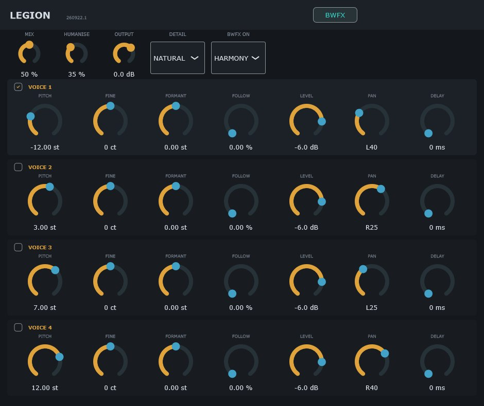
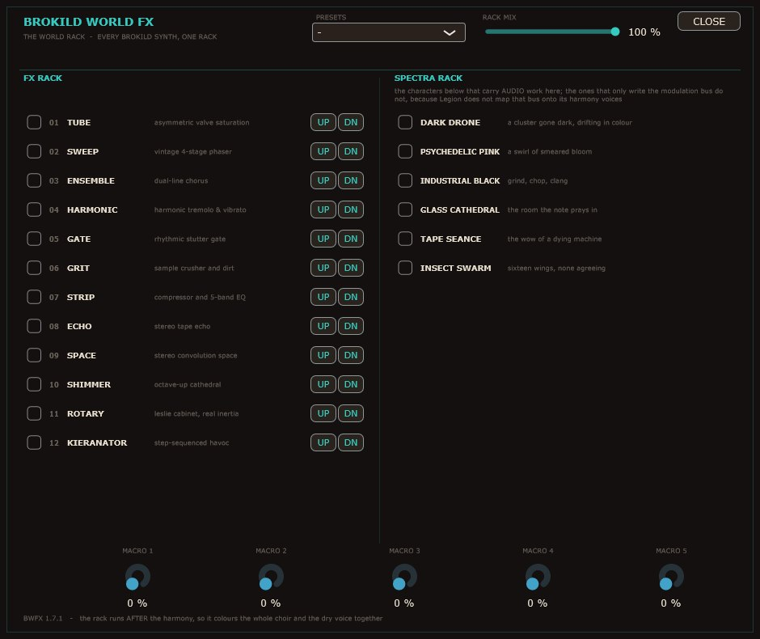

Brokild · VST3 effect · in development
“My name is Legion, for we are many.” One voice in, a choir of it out: up to four copies, each with its own pitch and its own body size.
Because a voice shifted without separating those two is a chipmunk, not a singer.
Windows VST3 · 2.3 MB · free download · source included
Shift a voice up and its formants go with it, which is why a pitch shifter turns a singer into a cartoon. Legion moves them separately. PITCH takes the note, FORMANT takes the size of the person singing it, and FOLLOW decides how much the body rides along: at zero it is the same person singing higher, at a hundred it is plain resampling, the chipmunk, on purpose.

HUMANISE gives each copy uncorrelated slow detune, level shimmer and timing stagger. That is the whole difference between a section and a stack.
At MIX zero the output is the input, delayed by the reported latency and otherwise untouched to the bit. The bench checks it rather than assuming it.
DETAIL picks the analysis window: 21, 43 or 85 ms. Lower voices need a longer one, and the choice is yours rather than a hidden guess.
The Brokild World FX rack sits on the HARMONY bus by default, so it grinds the copies and leaves your lead alone. Switch it to MASTER when you want the whole choir in the same room. The same rack, and the same five automatable macros, as every other Brokild plug-in.

It has not been heard in a DAW. 113 engine checks and 22 wrapper checks pass, the panel renders and the rack round-trips, but nobody has put a scream through it yet. That is why it sits in the Experimental Collection rather than the main one, and why the name is still provisional.
It is here because the source is worth reading and worth taking further. The engine is plain C++ with no framework, the bench renders real audio and reads the numbers off it, and everything the design record claims is something that bench measures.